Chapter 9. Mrs. Patty's Weird House - Part 1 of 2
"Who said that?" Michael asked after we heard the weird man's voice. "Headless Marvin?""It wasn't a person," Ryan said.
"It was one of those computer voices.""Let's get out of here," said Emily, "before it's too late!" She sounded like she was about to cry, as usual.
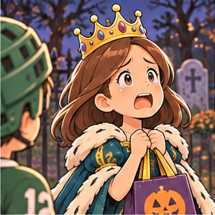
I wanted to cry too, but I didn't want to look like a baby."I—I'm not scared," I said."M-me neither," said Michael.
We went through the gate and climbed the front steps. You could hardly see anything. Even though I was walking on my , the stairs with every step.
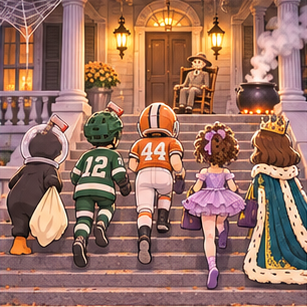
I was trying to find the when I walked into some . They were all over my face. Yuck!
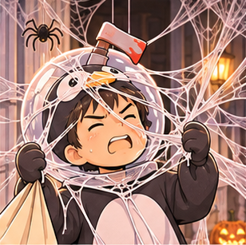
Then I put my foot in something. It was stuck! I couldn't get it out!
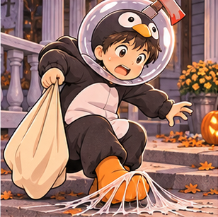
"Aaaah!" I screamed, my foot. "You stepped in a pumpkin head, dork," said Andrea."I knew that," I said, finally my foot free.
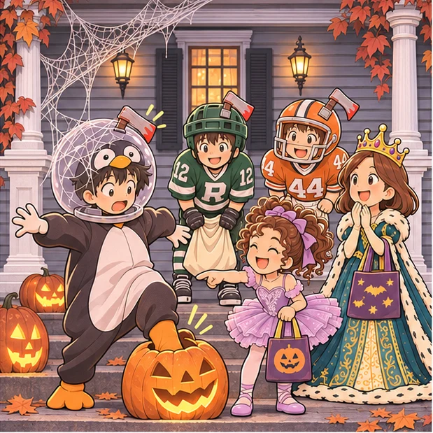
Any time somebody tells you that you did something dumb, always act like you did it . That's the first rule of being a kid.Ryan rang the .
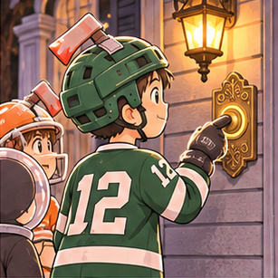
It played music. I was hoping that nobody would be home, but soon we heard footsteps and the front door slowly open. I .
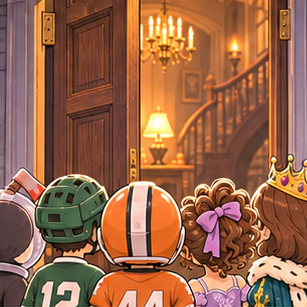
It was Mrs. Patty. She was still dressed in her witch costume. At least she didn't have an ax.
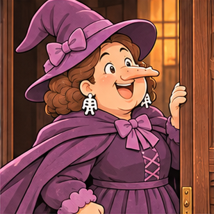
"Aha," she said in a voice, "my last group of trick-or-treaters is finally here.""I love your Halloween , Mrs. Patty," said Andrea, who never misses a chance to a grown-up."What ?" Mrs. Patty said.
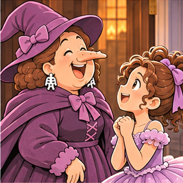
"My house always looks like this."I was really sweating now."We better go," I said.
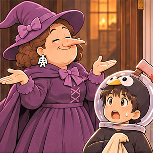
"It's way past our bedtimes.""Isn't there something you want to say first?" asked Mrs. Patty."Yeah," I said, "how does that stay on your nose?"
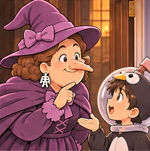
"You're supposed to say ','" said Mrs. Patty."Oh," we all said, "." "Before I give you candy," she said, "you must pass a test."
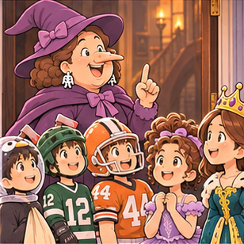
"No, that's not how it goes," said Michael. "All we have to do is say '' and you give us candy. Then we leave.
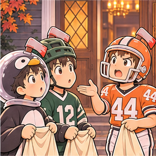
That's the way it's supposed to work.""Not here," said Mrs. Patty. "Do you want the candy or not?"
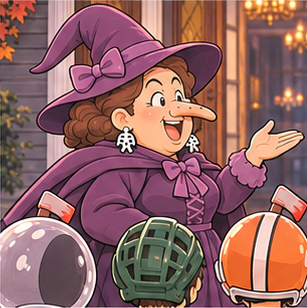
"Okay, okay," Ryan said, "what's the test?""If you go trick-or-treating," said Mrs. Patty, "and they give out Twix bars at ten houses and Nestlé Crunch bars at five houses and Baby Ruth bars at seven houses, how many candy bars will you have ?"
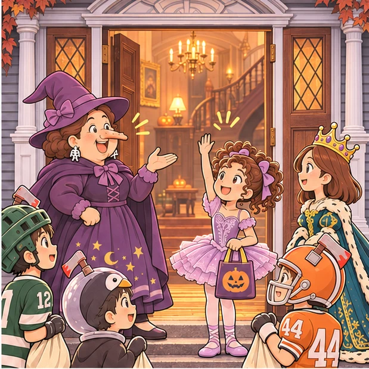